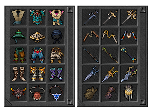

Design de itens
Criar uma nova vocação também trazia o desafio de criar novas classes de armas e armaduras, que muitas vezes precisavam ser integradas aos conjuntos existentes. Novos tipos de armas eram, por exemplo, nunchakus, garfos de sai, manoplas de garra, katars ou cajados de batalha. De simples armas de treinamento a itens animados de primeira linha nos conjuntos Sanguine ou Soul, a equipe de conteúdo tinha uma longa lista de desejos para atender. Muitos conjuntos de equipamentos dos últimos anos precisavam ser expandidos com armas de monge com elementos de design semelhantes.
Isso levantou questões como: como diferenciamos novos tipos de armas, como garfos sai ou katars, de adagas e espadas existentes? Neste caso, mudamos a orientação do item. Enquanto as espadas geralmente apontam para o canto superior esquerdo, os garfos sai e katars são posicionados do canto superior direito para o canto inferior esquerdo. Um novo recurso de empunhadura dupla também foi introduzido, e apontar para o canto inferior esquerdo parece a posição natural de segurar quando os sais e as luvas são espelhados nos espaços para as mãos das armas no inventário.
Habilidades do Monge


Sweeping Takedown
Gasta toda a Harmonia para causar dano aos inimigos a frente e ao lado do monge, ataque em área que atinge até 14 Sqms.
Artefatos

Jo Staff
Arma usada após sair de Dawnport, pode ser considerada a primeira arma "de verdade". Causa dano de Energy

Simple Jo Staff
Alternativa ao Jo Staff, porém deve ser dropada dos inimigos Emerald Damselfly ou o Dawnfly. Causa dano de Earth.

Pair of Monk Fists
Podemos usar nossa primeira arma que causa dano Physical a partir do lvl 10. Ela pode ser comprada de qualquer NPC vendedor de armas das cidades
Contato
Este é um projeto sem fins lucrativos